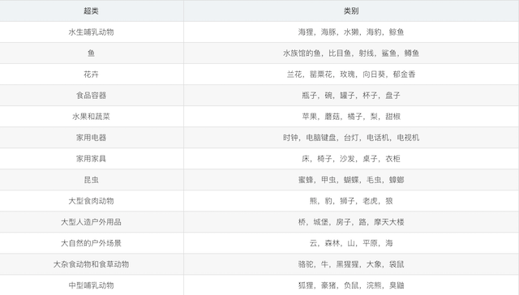

4.5 Keras Pipline与自定义模型¶
学习目标¶
- 目标
- 掌握keras pipline的使用
- 掌握keras model训练验证方法使用
- 掌握keras自定义层、损失函数和评估指标的使用
- 应用
- 无
使用了 Keras 的 Subclassing API 建立模型，即对 tf.keras.Model类进行扩展以定义自己的新模型，同时手工编写了训练和评估模型的流程。这种方式灵活度高，且与其他流行的深度学习框架（如 PyTorch、Chainer）共通，是本手册所推荐的方法。不过在很多时候，我们只需要建立一个结构相对简单和典型的神经网络（比如上文中的 MLP 和 CNN），并使用常规的手段进行训练。Keras 也给我们提供了另一套更为简单高效的内置方法来建立、训练和评估模型。
4.5.1 Keras Sequential/Functional API 模式建立模型¶
最典型和常用的神经网络结构是将一堆层按特定顺序叠加起来，那么，我们是不是只需要提供一个层的列表，就能由 Keras 将它们自动首尾相连，形成模型呢？Keras 的 Sequential API 正是如此。
- 1、tf.keras.models.Sequential() 提供一个层的列表，就能快速地建立一个 tf.keras.Model 模型并返回：
model = tf.keras.models.Sequential([
tf.keras.layers.Flatten(),
tf.keras.layers.Dense(100, activation=tf.nn.relu),
tf.keras.layers.Dense(10),
tf.keras.layers.Softmax()
])
不过，这种层叠结构并不能表示任意的神经网络结构。
- 2、为此，Keras 提供了 Functional API，帮助我们建立更为复杂的模型，比如说需要**多输入 / 输出或存在参数共享的模型**。其使用方法是将层作为可调用的对象并返回张量，并将输入向量和输出向量提供给
tf.keras.Model的inputs和outputs参数，如
inputs = tf.keras.Input(shape=(28, 28, 1))
x = tf.keras.layers.Flatten()(inputs)
x = tf.keras.layers.Dense(units=100, activation=tf.nn.relu)(x)
x = tf.keras.layers.Dense(units=10)(x)
outputs = tf.keras.layers.Softmax()(x)
model = tf.keras.Model(inputs=inputs, outputs=outputs)
4.5.2 使用 Keras Model 的 compile 、 fit 和 evaluate 方法训练和评估模型¶
- 1、通过调用model的
compile方法去配置该模型所需要的训练参数以及评估方法。 - model.compile(optimizer,loss=None,metrics=None, 准确率衡):配置训练相关参数
- optimizer:梯度下降优化器(在keras.optimizers)
from keras.optimizers import Adadelta
from keras.optimizers import Adagrad
from keras.optimizers import Adam
from keras.optimizers import Adamax
from keras.optimizers import Nadam
from keras.optimizers import Optimizer
from keras.optimizers import RMSprop
from keras.optimizers import SGD
from keras.optimizers import deserialize
from keras.optimizers import get
from keras.optimizers import serialize
from keras.optimizers import AdamOptimizer()
- loss=None:损失类型,类型可以是字符串或者该function名字参考：
...
from keras.losses import MAE as mae
from keras.losses import MAE as mean_absolute_error
from keras.losses import MAPE
from keras.losses import binary_crossentropy
from keras.losses import categorical_crossentropy
from keras.losses import serialize
...
- metrics=None, ['accuracy']
model.compile(optimizer=tf.keras.optimizers.Adam(),
loss='sparse_categorical_crossentropy',
metrics=['accuracy'])
两个相近的区别
1、sparse_categorical_crossentropy:对于目标值是整型的进行交叉熵损失计算
2、categorical_crossentropy:对于两个output tensor and a target tensor进行交叉熵损失计算
使用如下
model.compile(
optimizer=tf.keras.optimizers.Adam(learning_rate=0.001),
loss=tf.keras.losses.sparse_categorical_crossentropy,
metrics=[tf.keras.metrics.sparse_categorical_accuracy]
)
-
2、model.fit()：进行训练
-
model.fit(data_loader.train_data, data_loader.train_label, epochs=num_epochs, batch_size=batch_size)
-
x:特征值:
1、Numpy array (or array-like), or a list of arrays 2、A TensorFlow tensor, or a list of tensors 3、`tf.data` dataset or a dataset iterator. Should return a tuple of either `(inputs, targets)` or `(inputs, targets, sample_weights)`. 4、A generator or `keras.utils.Sequence` returning `(inputs, targets)` or `(inputs, targets, sample weights)`. -
y:目标值
-
batch_size=None：批次大小
-
epochs=1：训练迭代次数
-
validation_data ：验证数据，可用于在训练过程中监控模型的性能。
-
callbacks=None：添加回调列表（用于如tensorboard显示等）
model.fit(train_images, train_labels, epochs=5, batch_size=32)
- 3、model.evaluate(test_images, test_labels)
model.evaluate(test, test_label)
-
预测model.predict(test)：
-
其它方法：
model.save_weights(filepath)将模型的权重保存为HDF5文件或者ckpt文件model.load_weights(filepath, by_name=False)从HDF5文件（由其创建save_weights）加载模型的权重。默认情况下，架构预计不会更改。要将权重加载到不同的体系结构（具有一些共同的层），请使用by_name=True仅加载具有相同名称的那些层。
4.5.3 案例：CIFAR100数据集介绍¶
这个数据集就像CIFAR-10，除了它有100个类，每个类包含600个图像。，每类各有500个训练图像和100个测试图像。CIFAR-100中的100个类被分成20个超类。每个图像都带有一个“精细”标签（它所属的类）和一个“粗糙”标签（它所属的超类） 以下是CIFAR-100中的类别列表：

等等...

4.4.2.1 API 使用¶
- 用于构建CNN模型的API
- Conv2D：实现卷积，kernel_size,strides,padding,dataformat,'NHWC'和'NCHW'
- MaxPool2D：池化操作
keras.layers.Conv2D(32, kernel_size=5, strides=1,
padding='same', data_format='channels_last', activation=tf.nn.relu),
keras.layers.MaxPool2D(pool_size=2, strides=2, padding='same'),
4.4.2.2 步骤分析以及代码实现(缩减版LeNet5)¶
- 读取数据集:
- 从datasets中获取相应的数据集，直接有训练集和测试集
- 需要进行形状处理以及归一化
import tensorflow as tf
import os
os.environ["TF_CPP_MIN_LOG_LEVEL"] = "2"
class CNNMnist(object):
def __init__(self):
(self.train, self.train_label), (self.test, self.test_label) = \
tf.keras.datasets.cifar100.load_data()
self.train = self.train.reshape(-1, 32, 32, 3) / 255.0
self.test = self.test.reshape(-1, 32, 32, 3) / 255.0
- 进行模型编写
- 两层卷积层+两个神经网络层
-
网络设计：
-
第一层
- 卷积：32个filter、大小5*5、strides=1、padding="SAME"
- 激活：Relu
- 池化：大小2x2、strides2
- 第一层
- 卷积：64个filter、大小5*5、strides=1、padding="SAME"
- 激活：Relu
- 池化：大小2x2、strides2
- 全连接层
经过每一层图片数据大小的变化需要确定，CIFAR100输入的每批次若干图片数据大小为[None, 32 * 32]，如果要进过卷积计算，需要变成[None, 32, 32, 3]
- 第一层
- 卷积：[None, 32, 32, 3]———>[None, 32, 32, 32]
- 权重数量：[5, 5, 1 ,32]
- 偏置数量：[32]
- 激活：[None, 32, 32, 32]———>[None, 32, 32, 32]
- 池化：[None, 32, 32, 32]———>[None, 16, 16, 32]
- 第二层
- 卷积：[None, 16, 16, 32]———>[None, 16, 16, 64]
- 权重数量：[5, 5, 32 ,64]
- 偏置数量：[64]
- 激活：[None, 16, 16, 64]———>[None, 16, 16, 64]
- 池化：[None, 16, 16, 64]———>[None, 8, 8, 64]
- 全连接层
- [None, 8, 8, 64]——>[None, 8 * 8 * 64]
- [None, 8 * 8 * 64] x [8 * 8 * 64, 1024] = [None, 1024]
- [None,1024] x [1024, 100]——>[None, 100]
- 权重数量：[8 * 8 * 64, 1024] + [1024, 100]，由分类别数而定
- 偏置数量：[1024] + [100]，由分类别数而定
model = tf.keras.Sequential([
tf.keras.layers.Conv2D(32, kernel_size=5, strides=1,
padding='same', data_format='channels_last', activation=tf.nn.relu),
tf.keras.layers.MaxPool2D(pool_size=2, strides=2, padding='same'),
tf.keras.layers.Conv2D(64, kernel_size=5, strides=1,
padding='same', data_format='channels_last', activation=tf.nn.relu),
tf.keras.layers.MaxPool2D(pool_size=2, strides=2, padding='same'),
tf.keras.layers.Flatten(),
tf.keras.layers.Dense(1024, activation=tf.nn.relu),
tf.keras.layers.Dense(100, activation=tf.nn.softmax),
])
- 其它完整代码
def compile(self):
CNNMnist.model.compile(optimizer=tf.keras.optimizers.Adam(),
loss=tf.keras.losses.sparse_categorical_crossentropy,
metrics=['accuracy'])
return None
def fit(self):
CNNMnist.model.fit(self.train, self.train_label, epochs=1, batch_size=32)
return None
def evaluate(self):
test_loss, test_acc = CNNMnist.model.evaluate(self.test, self.test_label)
print(test_loss, test_acc)
return None
if __name__ == '__main__':
cnn = CNNMnist()
cnn.compile()
cnn.fit()
cnn.predict()
print(CNNMnist.model.summary())
- 训练效果
epoch 1:
......
43168/50000 [========================>.....] - ETA: 35s - loss: 3.6360 - acc: 0.1547
43200/50000 [========================>.....] - ETA: 35s - loss: 3.6354 - acc: 0.1547
43232/50000 [========================>.....] - ETA: 35s - loss: 3.6352 - acc: 0.1548
43264/50000 [========================>.....] - ETA: 34s - loss: 3.6348 - acc: 0.1549
43296/50000 [========================>.....] - ETA: 34s - loss: 3.6346 - acc: 0.1549
4.5.3.3 手动保存和恢复模型¶
1、手动保存权重¶
Model.save_weights 方法手动保存它们同样简单。默认情况下， tf.keras 和 save_weights 特别使用 TensorFlow checkpoints 格式 .ckpt 扩展名。
代码将权重存储到checkpoint—— 格式化文件的集合中，这些文件仅包含二进制格式的训练权重。 Checkpoints 包含：
- 1、一个或多个包含模型权重的。
- 2、索引文件，指示哪些权重存储在哪个分片中。
如果你只在一台机器上训练一个模型，你将有一个带有后缀的碎片： .data-00000-of-00001
- 只包含若干 Variables 对象序列化后的数据，不包含图结构，所以只给 checkpoint 模型不提供代码是无法重新构建计算图的
使用介绍
# 保存权重
model.save_weights('./checkpoints/my_checkpoint')
# 创建模型实例
model = create_model()
# 加载权重
model.load_weights('./checkpoints/my_checkpoint')
# 评估模型
loss,acc = model.evaluate(test_images, test_labels, verbose=2)
print("Restored model, accuracy: {:5.2f}%".format(100*acc))
上面的例子中进行保存
- 保存成ckpt形式
- model.save_weights('./weights/my_model')
- model.load_weights('./weights/my_model')
SingleNN.model.save_weights("./ckpt/SingleNN")
def predict(self):
# 直接使用训练过后的权重测试
if os.path.exists("./ckpt/checkpoint"):
SingleNN.model.load_weights("./ckpt/SingleNN")
predictions = SingleNN.model.predict(self.test)
# 对预测结果进行处理
print(np.argmax(predictions, 1))
return
2、保存整个模型¶
模型和优化器可以保存到包含其状态（权重和变量）和模型参数的文件中。这可以导出模型，以便在不访问原始 python 代码的情况下使用它。而且您可以通过恢复优化器状态的方式，从中断的位置恢复训练。
保存完整模型会非常有用，可以在 TensorFlow.js (HDF5, Saved Model) 加载他们，然后在 web 浏览器中训练和运行它们，或者使用 TensorFlow Lite 将它们转换为在移动设备上运行(HDF5, Saved Model)
- 将模型保存为HDF5文件
SingleNN.model.save_weights("./ckpt/SingleNN.h5")
def predict(self):
# 直接使用训练过后的权重测试
if os.path.exists("./ckpt/SingleNN.h5"):
SingleNN.model.load_weights("./ckpt/SingleNN.h5")
predictions = SingleNN.model.predict(self.test)
print(np.argmax(predictions, 1))
return
4.5.4 自定义层、损失函数和评估指标¶
可能你还会问，如果现有的这些层无法满足我的要求，我需要定义自己的层怎么办？事实上，我们不仅可以继承 tf.keras.Model 编写自己的模型类，也可以继承 tf.keras.layers.Layer 编写自己的层。
4.5.4.1 自定义层¶
自定义层需要继承 tf.keras.layers.Layer 类，并重写 init 、 build 和 call 三个方法，如下所示：
class MyLayer(tf.keras.layers.Layer):
def __init__(self):
super().__init__()
# 初始化代码
def build(self, input_shape): # input_shape 是一个 TensorShape 类型对象，提供输入的形状
# 在第一次使用该层的时候调用该部分代码，在这里创建变量可以使得变量的形状自适应输入的形状
# 而不需要使用者额外指定变量形状。
# 如果已经可以完全确定变量的形状，也可以在__init__部分创建变量
self.variable_0 = self.add_weight(...)
self.variable_1 = self.add_weight(...)
def call(self, inputs):
# 模型调用的代码（处理输入并返回输出）
return output
例如，如果我们要自己实现一个全连接层（ tf.keras.layers.Dense），可以按如下方式编写。此代码在 build方法中创建两个变量，并在 call方法中使用创建的变量进行运算：
class LinearLayer(tf.keras.layers.Layer):
def __init__(self, units):
super().__init__()
self.units = units
def build(self, input_shape): # 这里 input_shape 是第一次运行call()时参数inputs的形状
self.w = self.add_variable(name='w',
shape=[input_shape[-1], self.units], initializer=tf.zeros_initializer())
self.b = self.add_variable(name='b',
shape=[self.units], initializer=tf.zeros_initializer())
def call(self, inputs):
y_pred = tf.matmul(inputs, self.w) + self.b
return y_pred
在定义模型的时候，我们便可以如同 Keras 中的其他层一样，调用我们自定义的层 LinearLayer
class LinearModel(tf.keras.Model):
def __init__(self):
super().__init__()
self.layer = LinearLayer(units=1)
def call(self, inputs):
output = self.layer(inputs)
return output
4.5.4.2 自定义损失函数和评估指标¶
自定义损失函数需要继承 tf.keras.losses.Loss 类，重写 call 方法即可，输入真实值 y_true 和模型预测值 y_pred ，输出模型预测值和真实值之间通过自定义的损失函数计算出的损失值。下面的示例为均方差损失函数：
class MeanSquaredError(tf.keras.losses.Loss):
def call(self, y_true, y_pred):
return tf.reduce_mean(tf.square(y_pred - y_true))
自定义评估指标需要继承 tf.keras.metrics.Metric 类，并重写 init 、 update_state 和 result 三个方法。下面的示例对前面用到的 SparseCategoricalAccuracy 评估指标类做了一个简单的重实现：
class SparseCategoricalAccuracy(tf.keras.metrics.Metric):
def __init__(self):
super().__init__()
self.total = self.add_weight(name='total', dtype=tf.int32, initializer=tf.zeros_initializer())
self.count = self.add_weight(name='count', dtype=tf.int32, initializer=tf.zeros_initializer())
def update_state(self, y_true, y_pred, sample_weight=None):
values = tf.cast(tf.equal(y_true, tf.argmax(y_pred, axis=-1, output_type=tf.int32)), tf.int32)
self.total.assign_add(tf.shape(y_true)[0])
self.count.assign_add(tf.reduce_sum(values))
def result(self):
return self.count / self.total
4.5.5 总结¶
- keras pipline的使用
- keras model训练验证方法使用
- keras model 模型的保存和加载方法
- keras自定义层、损失函数和评估指标的使用